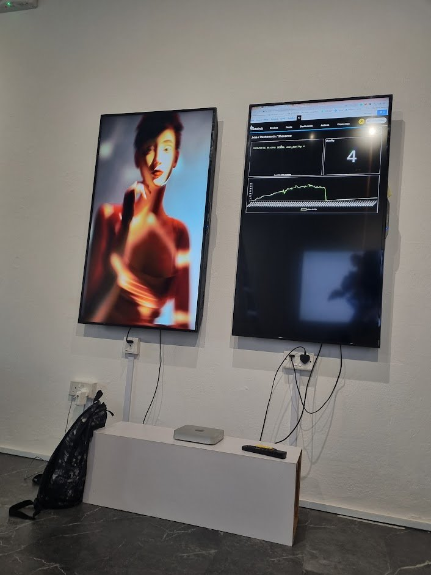
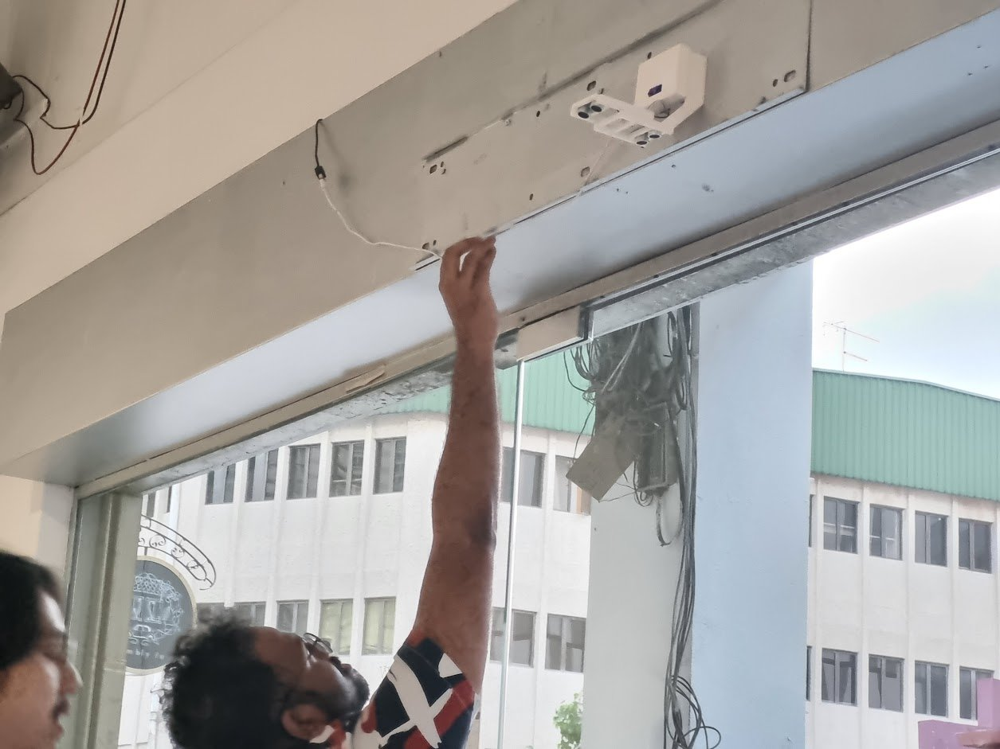

01 · Duality of Self
Introversion and extroversion as a responsive system.


The physical version responded to the number of people in the room, switching between two states. The NFT version, The Duality of ETH, used Ethereum traffic to decide which state appeared.